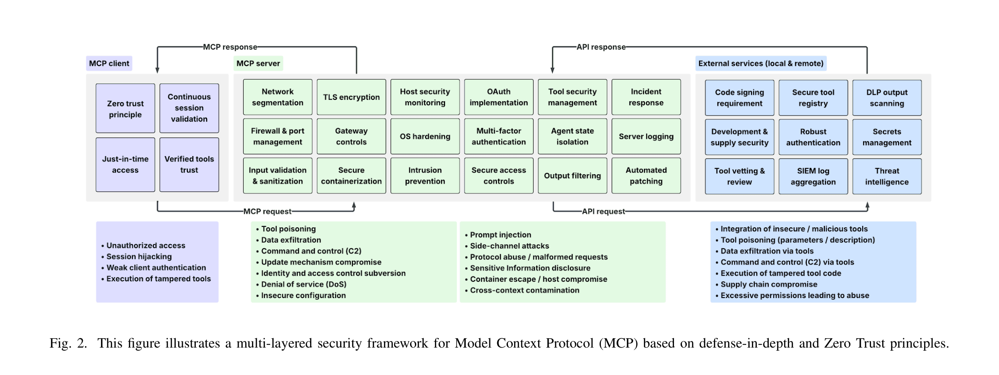
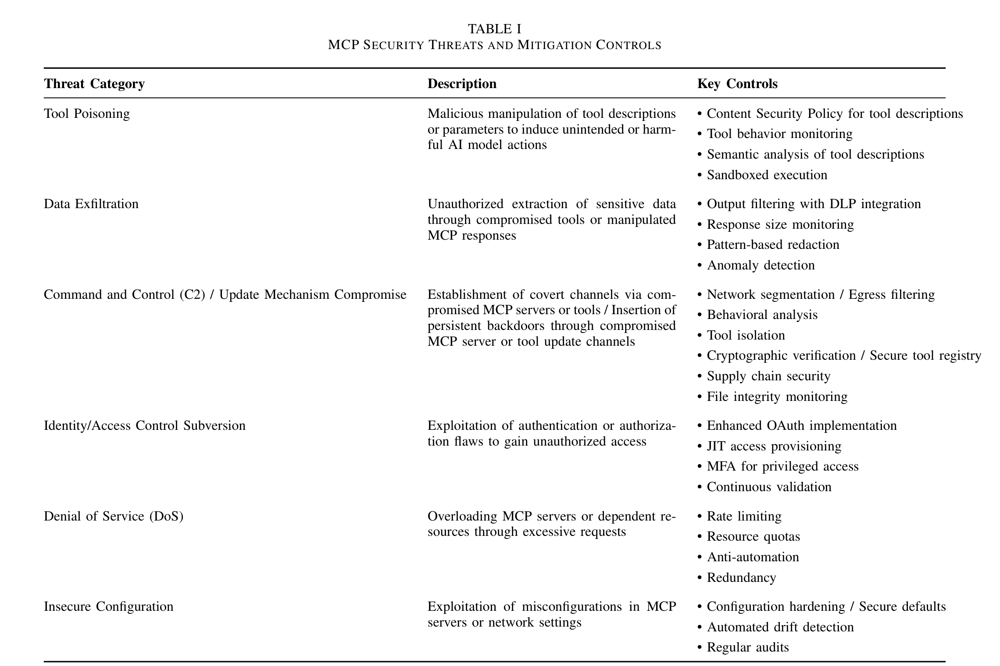

Keynote thesis
S in MCP stands for Security
MCP is not just a protocol story. It is a delegated-authority security story.
Why now
Operational urgency, not theory
Reachable action surface is growing faster than review discipline.
- MCP is spreading through copilots, platform tooling, and enterprise gateways
- Small mistakes now compose into high-consequence chains
- Security has to move at rollout speed
Published reference pattern
MCP @ Microsoft: a reference model
Use Microsoft’s public guidance as a bounded enterprise reference pattern.
- Published defense-in-depth guidance, not proof the ecosystem is solved
- Identity, gateway policy, private execution, and telemetry all matter
- The lesson: MCP needs a control plane around it
Core framing
MCP is delegated authority
The security question is not only what the model says; it is what the system is allowed to do.
- Authority moves across host, client, server, tool, and backend systems
- Every credential, tool, and approval path becomes part of the trust boundary
- The right question is: where does authority move, and who constrains it?
Security model
The MCP execution loop
Attacks and controls appear before, during, and after execution.
Build-time security
Build security into the tool contract
Bad tool design is a security problem.
- Design for agent success, not API exhaustiveness
- Prefer task-oriented tools over one-tool-per-endpoint sprawl
- Use clear schemas, structured outputs, and safe errors
Failure bucket 1
Exposure and sample-code failures
- Documented public examples include exposed MCP surfaces and unsafe bind defaults
- Local-first tooling and reference servers can travel too quickly into real environments
- “Internal only” and “reference code” are not controls
Failure bucket 2
Delegated-authority failures
- Token leaks are portable action rights, not just secret exposure
- Pass-through authority and confused-deputy patterns create silent escalation
- Brokered, scoped, short-lived credentials are the safer default
Failure bucket 3
Context and trust failures
- Untrusted context can steer privileged tool use
- Shadowing, poisoned metadata, and rug pulls are trust-admission failures
- Output reuse is part of the control surface, not a harmless convenience
Internal benchmark note
Why simple defenses still miss attacks
Use internal benchmark signals to justify layered controls without overselling them.
- Some obvious malicious metadata is catchable
- Semantically plausible abuse still gets through
- Scanning helps, but layered controls matter more than one detector
Photo slide
Five control planes
The audience should be able to take a picture of this and use it later.
Ownership model
Who owns what
A control model becomes real only when ownership is explicit.
- Platform: deployment pattern, gateways, registry, safe defaults
- IAM: brokered credentials, scopes, sender and audience rules
- Security Eng / AppSec: onboarding review, validation standards, red-team patterns
- SOC / Ops: tracing, detection, and response playbooks
- Builders / Product: tool purpose, business fit, high-risk approval paths
Control plane 1
Secure deployment patterns
Architecture choice is itself a security control.
- Gateway-centric, dedicated-zone, or tightly governed services are deliberate choices
- Identity, private networking, policy, and telemetry should be part of the default path
- Secure architecture comes before secure prompts
Control plane 2
Tool admission and provenance
Treat tool onboarding like supply-chain governance.
- Registry every tool with owner, purpose, permissions, and review state
- Require provenance, version pinning, and change approval
- Re-certify tools over time; trust should decay without review
Control plane 3
Brokered identity and approval
Authority should shrink as it moves.
- Use short-lived, scoped, tool-specific credentials
- Separate read, write, and admin paths
- Reserve destructive paths for explicit approval and stronger policy
Control plane 4
Validate inputs, outputs, and errors
Context integrity is an engineering discipline.
- Validate schemas and reject drift where possible
- Prefer structured outputs over prose the model must interpret
- Treat metadata, retrieved content, tool output, and errors as untrusted until validated
Control plane 5
Containment and observability
Containment reduces blast radius; telemetry reduces dwell time.
- Sandbox runtime and restrict filesystem, process, and network access
- Use egress allowlists and cross-tool-chain controls
- Trace discovery, approval, invocation, and response end to end
Continuous validation
Logic, protocol, and agent behavior
Give teams a concrete testing model they can operationalize.
- Unit tests verify tool logic and policy behavior
- Protocol tests verify MCP compliance and failure handling
- Agent tests verify discoverability, selection, and recovery
Rollout baseline
Day-1 baseline and 90-day roadmap
Make the guidance actionable the next day, not just directionally correct.
Day 1 baseline
Minimum production standardRegistry entry, named owner, scoped credentials, high-risk approval, mandatory telemetry, containment baseline.30–90 days
StandardizeGateway patterns, onboarding workflows, metadata/output scanning, and incident playbooks.Long term
Safer defaultsSigned artifacts, policy-aware clients, continuous recertification, and secure-by-construction ecosystems.Threat-modeling artifact
A matrix teams will actually use
A simpler matrix is easier to use and easier to remember.
- Core matrix: risk, stage, first control, owner, priority
- Team worksheet can add asset, signal, impact, likelihood, recovery
- One row = one realistic abuse story
- Seed with OWASP MCP Top 10, then tailor to your workflows
Starter matrix examples
Fix now vs harden next
Seed with OWASP MCP Top 10, then show priority before detail.
- Fix now: MCP01 secret exposure
- Fix now: MCP02 scope creep
- Fix now: MCP05 command execution
- Harden next: MCP03 tool poisoning, MCP09 shadow servers, MCP10 context over-sharing
Final call to action
Move fast on MCP only if security moves with it.
Pick one workflow, map where authority moves, and fix one risky path before adding more capability.
If your model can reach it,
your security model must explain it.
Appendix A · enterprise reference framework
Figure 2 from the enterprise MCP security paper
Reference architecture from the paper. Useful for Q&A and follow-up. Caption kept in the footer so the diagram gets maximum space.

Appendix B · threat/control reference
Table I from the enterprise MCP security paper
Category-level threat/control summary from the paper. Companion reference only.
